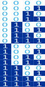

Power Set
OK? Got that? Maybe an example will help...
All The Subsets

For the set {a,b,c}:
- The empty set {} is a subset of {a,b,c}
- And these are subsets: {a}, {b} and {c}
- And these are also subsets: {a,b}, {a,c} and {b,c}
- And {a,b,c} is a subset of {a,b,c}
And altogether we get the Power Set of {a,b,c}:
P(S) = { {}, {a}, {b}, {c}, {a, b}, {a, c}, {b, c}, {a, b, c} }
Think of it as all the different ways we can select the items (the order of the items doesn't matter), including selecting none, or all.

Example: The shop has banana, chocolate and lemon ice cream.
What do you order?
- Nothing at all: {}
- Or maybe just banana: {banana}. Or just {chocolate} or just {lemon}
- Or two together: {banana,chocolate} or {banana,lemon} or {chocolate,lemon}
- Or all three! {banana, chocolate,lemon}
Question: if the shop also has strawberry flavor what are your options? Solution later.
How Many Subsets
Easy! If the original set has n members, then the Power Set will have 2n members
Example: {a,b,c} has three members (a,b and c).
So, the Power Set should have 23 = 8, which it does, as we worked out before.
Notation
The number of members of a set is often written as |S|, so when S has n members we can write:
Example: for the set S={1,2,3,4,5} how many members will the power set have?
Well, S has 5 members, so:
|P(S)| = 2n = 25 = 32
You will see in a minute why the number of members is a power of 2
It's Binary!
And here is the most amazing thing. To create the Power Set, write down the sequence of binary numbers (using n digits), and then let "1" mean "put the matching member into this subset".
So "101" is replaced by 1 a, 0 b and 1 c to get us {a,c}
Like this:
| abc | Subset | |
|---|---|---|
| 0 | 000 | { } |
| 1 | 001 | {c} |
| 2 | 010 | {b} |
| 3 | 011 | {b,c} |
| 4 | 100 | {a} |
| 5 | 101 | {a,c} |
| 6 | 110 | {a,b} |
| 7 | 111 | {a,b,c} |
Well, they are not in a pretty order, but they are all there.
Another Example
Let's eat! We have four flavors of ice cream: banana, chocolate, lemon, and strawberry. How many different ways can we have them?
Let's use letters for the flavors: {b, c, l, s}. Example selections include:
- {} (nothing, you are on a diet)
- {b, c, l, s} (every flavor)
- {b, c} (banana and chocolate are good together)
- etc
| bcls | Subset | |
|---|---|---|
| 0 | 0000 | {} |
| 1 | 0001 | {s} |
| 2 | 0010 | {l} |
| 3 | 0011 | {l,s} |
| ... | ... etc .. | ... etc ... |
| 12 | 1100 | {b,c} |
| 13 | 1101 | {b,c,s} |
| 14 | 1110 | {b,c,l} |
| 15 | 1111 | {b,c,l,s} |
And the result is (more neatly arranged):
P = { {}, {b}, {c}, {l}, {s}, {b,c}, {b,l}, {b,s}, {c,l}, {c,s}, {l,s}, {b,c,l}, {b,c,s},
{b,l,s}, {c,l,s}, {b,c,l,s} }
 |
SymmetryIn the table above, did you notice that the first subset is empty and the last has every member? But did you also notice that the second subset has "s", and the second last subset has everything except "s"? |
|  | In fact when we mirror that table about the middle we see there is a kind of symmetry. This is because the binary numbers (that we used to help us get all those combinations) have a beautiful and elegant pattern. |
A Prime Example
The Power Set can be useful in unexpected areas.
I wanted to find all factors (not just the prime factors, but all factors) of a number.
I could test all possible numbers: I could check 2, 3, 4, 5, 6, 7, etc...
That took a long time for large numbers.
But could I try to combine the prime factors?
Let me see, the prime factors of 510 are 2×3×5×17 (using prime factor tool).
So, all the factors of 510 are:
- 2, 3, 5 and 17,
- 2×3, 2×5 and 2×17 as well, and
- 2×3×5 and 2×3×17 and ...
- .. aha! Just like ice cream I needed a Power Set!
And this is what I got:
| 2,3,5,17 | Subset | Factors of 510 | |
|---|---|---|---|
| 0 | 0000 | { } | 1 |
| 1 | 0001 | {17} | 17 |
| 2 | 0010 | {5} | 5 |
| 3 | 0011 | {5,17} | 5 × 17 = 85 |
| 4 | 0100 | {3} | 3 |
| 5 | 0101 | {3,17} | 3 × 17 = 51 |
| ... etc ... | ... etc ... | ... etc ... | |
| 15 | 1111 | {2,3,5,17} | 2 × 3 × 5 × 17 = 510 |
And the result? The factors of 510 are 1, 2, 3, 5, 6, 10, 15, 17, 30, 34, 51, 85, 102, 170, 255 and 510 (and −1, −2, −3, etc as well). See the All Factors Tool.
Automated
I couldn't resist making Power Sets available to you in an automated way.
So, when you need a power set, try Power Set Maker.